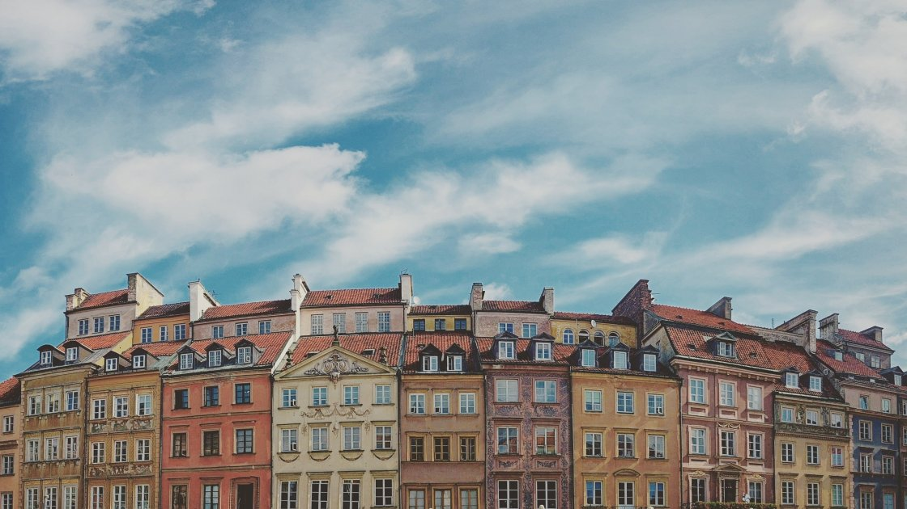
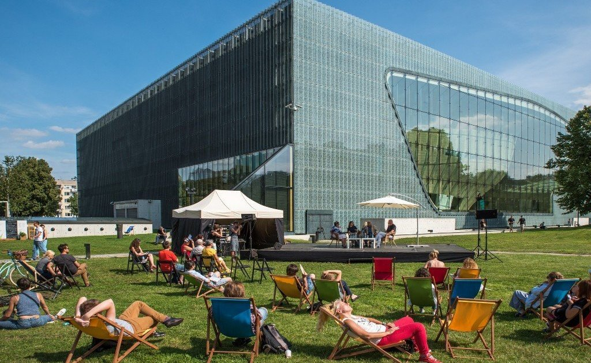
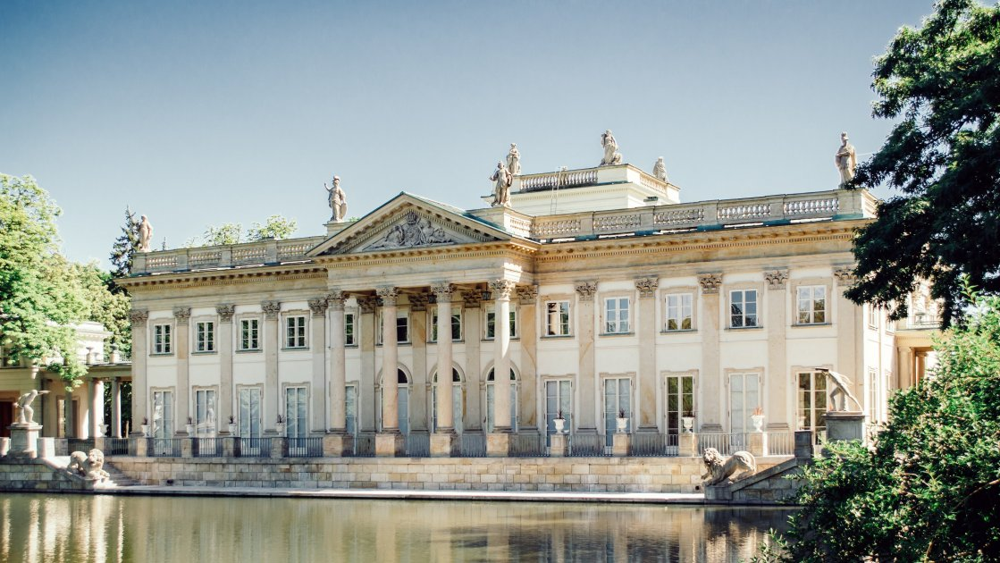
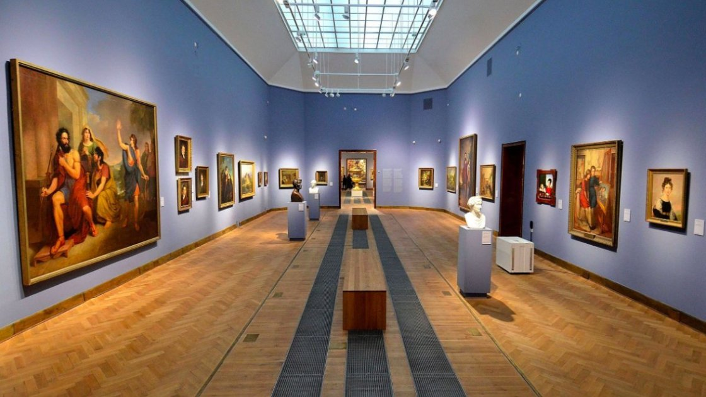
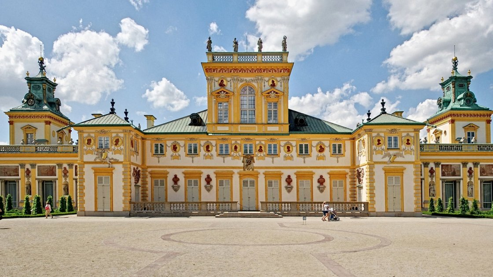

Він був повністю зруйнований під час Другої світової війни, а потім реконструйований, переважно з зображень 18 століття пензля італійського художника Каналетто. З 1980 року включений в список Всесвітньої спадщини ЮНЕСКО.
Серце Старого міста – Ринкова площа (Rynek Starego Miasta) з численними кафе і ресторанами, яку охороняє Варшавська русалка. Крім неї варто побачити Барбакан – один з небагатьох збережених ділянок міських укріплень 16 століття, і костел Святого Іоанна Хрестителя — головний католицький храм столиці
Інтерактивний музей знаходиться в районі, який до війни заселяли євреї. Він був відкритий в 2013, до 70 річниці повстання у Варшавському гетто. Будівля з скла, бетону та міді у стилі постмодерн, спроектоване фінським архітектором Райнером Махламяки, отримала кілька престижних нагород в області архітектури. Сам же музей в 2016 був визнаний кращим в Європі.
Резиденція останнього польського короля Станіслава Понятовського, побудована в стилі раннього класицизму на штучному острові в парку Łazienki. Інтер'єри, прикрашені картинами Рембрандта і Рубенса, були знищені під час війни, реконструкція завершилася тільки в 1964 році. Площа навколишнього палац парку — 76 гектарів (приблизно 120 футбольних полів). Точніше, це три парку, створених у різний час в різному стилі: королівський парк 18 століття, романтичний парк 19 століття і модерністський парк 20 століття. З 19 травня по 29 вересня біля пам'ятника Шопену проводяться безкоштовні концерти, де виконуються твори видатного композитора.
Найбільший художній музей польської столиці, заснований більше ніж 150 років тому. У колекції представлені твори мистецтва від античних часів до 20 століття: картини, скульптури, гравюри, малюнки, монети, медалі, книги, фотографії та ікони. Проводяться тимчасові виставки.
muzeiКомплекс розташований приблизно в 10 кілометрах від історичного центру, сюди веде Королівський тракт. У 1805 році тут був відкритий перший в країні музей. Заміська резиденція короля Яна III Собеського у стилі бароко, яку називають «польським Версалем», оточена парком у французькому стилі. У гарну погоду він заповнений туристами та мешканцями Варшави, це популярне місце для відпочинку і зустрічей з друзями.
